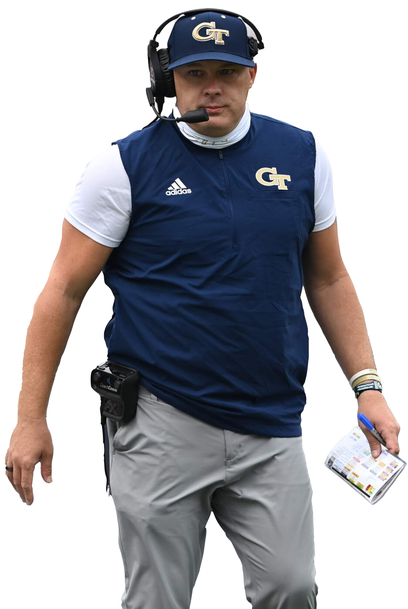
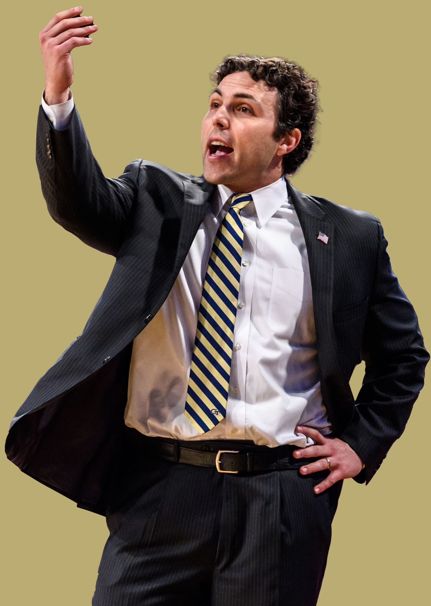
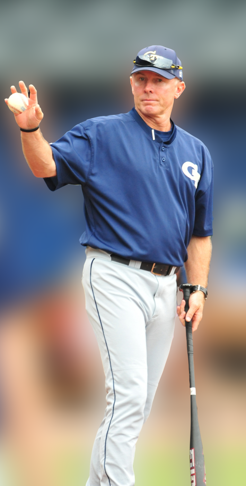
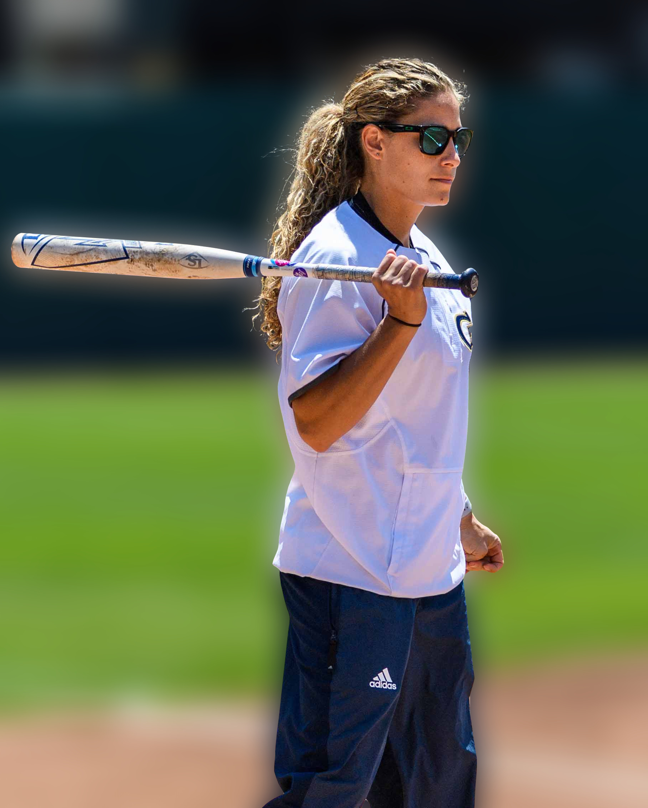
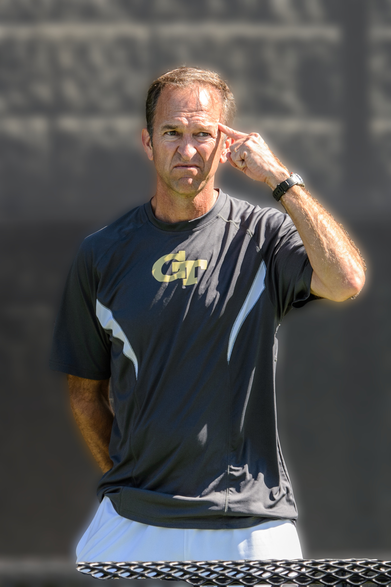
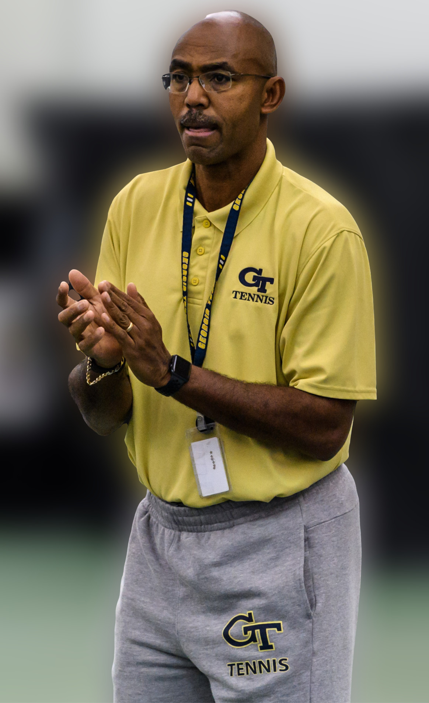

FOOTBALL
| Previous Football Head Coaches | |||||
|---|---|---|---|---|---|
| Head Coach | Years Active | Record | Bowl Record | National Championships | Conference Championships |
| Paul Johnson | 2008-2018 | 83-60 | 3-6 | 0 | 0 (2009 vacated by NCAA) |
| Jon Tenuta | 2007 | 0-1 | 0-1 | 0 | 0 |
| Chan Gailey | 2002-2007 | 44-32 | 2-3 | 0 | 0 |
| Mac McWhorter | 2001 | 1-0 | 1-0 | 0 | 0 |
| George O'Leary | 1994-2001 | 52-33 | 2-2 | 0 | 1 (1998) |
| Bill Lewis | 1992-1994 | 11-19 | 0-0 | 0 | 0 |
| Bobby Ross | 1987-1991 | 31-26-1 | 2-0 | 1 (1990) | 1 (1990) |
| Bill Curry | 1980-1986 | 31-43-4 | 1-0 | 0 | 0 |
| Pepper Rodgers | 1974-1979 | 34-31-2 | 0-1 | 0 | 0 |
| Bill Fulcher | 1972-1973 | 12-10-1 | 1-0 | 0 | 0 |
| Bud Carson | 1967-1971 | 27-27 | 1-1 | 0 | 0 |
| Bobby Dodd | 1945-1966 | 165-64-8 | 9-4 | 1 (1952) | 2 (1951, 1952) |
| William Alexander | 1920-1944 | 134-95-15 | 3-2 | 1 (1928) | 8 (1920, 1921, 1922, 1927, 1928, 1939, 1943, 1944) |
| John Heisman | 1904-1919 | 102-29-7 | 0-0 | 1 (1917) | 3 (1916, 1917, 1918) |
| John McKee | 1902-1903 | 2-11-2 | 0-0 | 0 | 0 |
| Cyrus Strickler | 1901 | 4-0-1 | 0-0 | 0 | 0 |
| Harris Collier | 1899-1900 | 0-9 | 0-0 | 0 | 0 |
| Rufus Nalley | 1898 | 0-3 | 0-0 | 0 | 0 |
| No Coach | 1896-1897 | 1-2 | 0-0 | 0 | 0 |
| Frank Spain and Leonard Wood | 1893-1894 | 2-4-1 | 0-0 | 0 | 0 |
| Earnest West | 1892 | 0-3 | 0-0 | 0 | 0 |

MEN'S BASKETBALL
| Previous Basketball Head Coaches | |||||
|---|---|---|---|---|---|
| Head Coach | Years Active | Record | NCAA Tournament Appearances | NCAA Tourney Record | Conference Championships |
| Brian Gregory | 2011-2016 | 76-86 | 0 | 0-0 | 0 |
| Paul Hewitt | 2000-2011 | 190-162 | 5 (2001, 2004, 2005, 2007, 2010) | 7-5 | 0 |
| Bobby Cremins | 1981-2000 | 354-237 | 10 (1985-1993, 1996) | 15-10 | 4 (1985, 1990, 1993, 1996-regular season only) |
| Dwayne Morrison | 1973-1981 | 91-122 | 0 | 0-0 | 0 |
| Whack Hyder | 1951-1973 | 292-271 | 1 (1960) | 1-1 | 0 |
| Roy McArthur | 1946-1951 | 57-72 | 0 | 0-0 | 0 |
| Dwight Keith | 1943-1946 | 35-21 | 0 | 0-0 | 0 |
| Roy Mundorff | 1926-1943 | 173-134 | 0 | 0-0 | 1 (1938) |
| Harold Hansen | 1924-1926 | 10-23 | 0 | 0-0 | 0 |
| Joseph Bean | 1920-1921 | 4-10 | 0 | 0-0 | 0 |
| William Alexander | 1919-1920, 1921-1924 | 36-38 | 0 | 0-0 | 0 |
| John Heisman | 1908-1909, 1912-1914 | 9-14 | 0 | 0-0 | 0 |
| Chapman | 1906 | 2-1 | 0 | 0-0 | 0 |
WOMEN'S BASKETBALL
| Previous Basketball Head Coaches | |||||
|---|---|---|---|---|---|
| Head Coach | Years Active | Record | NCAA Tournament Appearances | NCAA Tourney Record | Conference Championships |
| MaChelle Joseph | 2003-2019 | 311-204 | 7 (2007, 2008, 2009, 2010, 2011, 2012, 2014) | 5-7 | 0 |
| Agnus Berenato | 1988-2003 | 223-209 | 2 (1993, 2003) | 0-2 | 0 |
| Bernadette McGlade | 1981-1988 | 74-116 | 0 | 0-0 | 0 |
| Benny Dees | 1980-1981 | 8-19 | 0 | 0-0 | 0 |
| Jim Culpepper | 1974-1980 | 70-83 | 0 | 0-0 | 0 |

BASEBALL
| Previous Baseball Head Coaches | |||||
|---|---|---|---|---|---|
| Head Coach | Years Active | Record | NCAA Tournament Appearances | NCAA Tourney Record | Conference Championships |
| Jim Morris | 1982-1993 | 504-244-1 | 9 (1985-1993) | 15-18 | 5 (1985-1988, 1993-regular season only) |
| Jim Luck | 1962-1981 | 320-280-5 | 1 (1971) | 3-2 | 0 |
| Joe Pittard | 1946-1961 | 169-173-7 | 1 (1959) | 1-2 | 1 (1957) |
| Roy Mundorff | 1940-1945 | 26-36-1 | 0 | 0-0 | 0 |
| Bobby Dodd | 1932-1939 | 43-64-2 | 0 | 0-0 | 0 |
| Kid Clay | 1921-1931 | 147-99-5 | 0 | 0-0 | 3 (1921, 1923, 1926) |
| Joe Bean | 1918-1920 | 35-18 | 0 | 0-0 | 1 (1920) |
| John Heisman | 1904-1917 | 163-97-5 | 0 | 0-0 | 1 (1906) |
| Irving | 1903 | 9-9 | 0 | 0-0 | 0 |
| Sammy Strang | 1902 | 5-8 | 0 | 0-0 | 0 |
| Todd | 1900-1901 | 12-9 | 0 | 0-0 | 0 |
| Unknown | 1895-1899 | 4-9 | 0 | 0-0 | 0 |

SOFTBALL
| Previous Softball Head Coaches | |||||
|---|---|---|---|---|---|
| Head Coach | Years Active | Record | NCAA Tournament Appearances | NCAA Tourney Record | Conference Championships |
| Shelly Hoerner | 2014-2017 | 80-125 | 0 | 0-0 | 0 |
| Sharon Perkins | 2007-2013 | 290-138 | 6 (2007-2012) | 9-12 | 4 (2009, 2010, 2011-regular season only, 2012) |
| Ehren Earleywine | 2004-2006 | 146-55 | 3 (2004-2006) | 6-6 | 1 (2005) |
| Kate Madden | 1999-2003 | 161-143 | 2 (2002, 2003) | 5-4 | 1 (2002) |
| Regina Thomaselli | 1991-1998 | 239-193-1 | 0 | 0-0 | 0 |
| No Coach | 1987-1990 | 52-107-1 | 0 | 0-0 | 0 |

MEN'S TENNIS
| Previous Tennis Head Coaches | ||||
|---|---|---|---|---|
| Head Coach | Years Active | Record | NCAA Tournament Appearances | Conference Championships |
| Jean Desdunes | 1988-1998 | 139-133 | 4 (1988, 1994, 1997, 1998) | 1 (1988-regular season only) |
| Gery Groslimond | 1983-1987 | 54-62 | 0 | 4 (2009, 2010, 2011-regular season only, 2012) |
| Walter Johnson | 1974-1982 | 76-91 | 0 | 1 (2005) |
| Jack Rodgers | 1962-1973 | 117-84-3 | 0 | 1 (2002) |
| Earle Bortell | 1934-1961 | 228-102-2 | 0 | 3 (1938, 1946, 1960) |

WOMEN'S TENNIS
| Previous Tennis Head Coaches | |||||
|---|---|---|---|---|---|
| Head Coach | Years Active | Record | NCAA Tournament Appearances | NCAA National Titles | Conference Championships |
| Bryan Shelton | 2000-2012 | 229-109 | 13 (2000-2012) | 1 (2007) | 5 (2005, 2006, 2007, 2008-regular season only, 2010) |
| Sue Hutchinson | 1995-1999 | 56-53 | 0 | 0 | 0 |
| Janey Strause | 1993-1994 | 12-35 | 0 | 0 | 0 |
| Rick Davison | 1986-1991 | 79-88 | 0 | 0 | 0 |
| Julie Wrege | 1979-85, 1992 | 86-75 | 0 | 0 | 0 |
| Hoylene Noble | 1977-1978 | 8-6 | 0 | 0 | 0 |
VOLLEYBALL
| Previous Volleyball Head Coaches | ||||
|---|---|---|---|---|
| Head Coach | Years Active | Record | NCAA Tournament Appearances | Conference Championships |
| Tonya Johnson | 2009-2013 | 85-72 | 1 (2009) | 0 |
| Bond Shymansky | 2002-2008 | 172-64 | 3 (2002-2004) | 3 (2002, 2003-2004-regular season only) |
| Shelton Collier | 1991-2001 | 271-114 | 5 (1994-1996, 2000-2001) | 3 (1994-regular season only, 1995, 2000-regular season only) |
| Judy Sackfield | 1985-1990 | 75-132 | 0 | 0 |
| Terry Chambers | 1984 | 4-22 | 0 | 0 |
| Mary Ann Ingram | 1982-1983 | 25-40 | 0 | 0 |
| David Houser | 1980-1981 | 43-46 | 0 | 0 |

GOLF
| Previous Golf Head Coaches | ||||
|---|---|---|---|---|
| Head Coach | Years Active | Record/Tournament Wins | NCAA Tournament Appearances | Conference Championships |
| Puggy Blackmon | 1982-1995 | 32 | 11 (1985-1995) | 5 (1985, 1991-1994) |
| Tommy Plaxico | 1955-1982 | 123-134-8 | 0 | 0 |
| H.E. Dennison | 1930-1942, 1945-1955 | 83-42-1 | 1 (1947) | 1 (1949) |
| Unknown Coach | 1917-1930 | 33-17 | 0 | 0 |
SWIMMING & DIVING
Courtney Shealy Hart (2009-)
Conference Champions Coached: 3
| Previous Swimming Head Coaches | ||||
|---|---|---|---|---|
| Head Coach | Years Active | NCAA champions coached | Men's conference champions coached: | Women's conference champions coached: |
| Stu Wilson | 2005-2009 | 0 | 5 (2006, 2008, 2009-3 people) | 0 |
| Seth Baron | 1997-2005 | 0 | 4 (2002, 2003-2 people, 2005) | 1 (2005) |
| Bill Humber | 1991-1997 | 0 | 1 (1994) | 0 |
| Brad Lehman | 1988-1991 | 0 | 0 | 0 |
| Herb McAuley | 1965-1987 | 0 | 0 | 0 |
| Fred Lanoue | 1936-1965 | 0 | 12 (1937, 1940-1942, 1949-2 people, 1950-2 people, 1952, 1953, 1957, 1964) | 0 |
| Kenneth Thrash Sr. | 1932-1935 | 0 | 0 | 0 |
| Unknown | 1918-1931 | 1 (1927) | 0 | 0 |